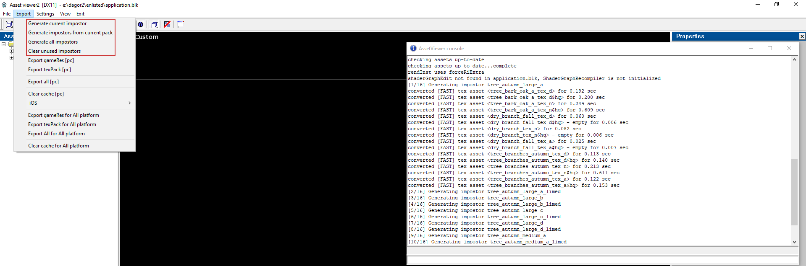

Overview
The purpose of this tool is to generate impostor textures of rendInst models to be exported to game resource packages.
Local Workflow
The tool is a separate executable. The existing daBuild is console application, thus it does not support rendering assets.
The generation of the impostor textures takes place before the building of the assets, so the generated textures get exported as well
Generate the impostor textures.
Build the resources with dabuild (to test them locally).
Commit changes:
.folder.blk, which is used for the trees,the generated textures (there are 3 per rendinst),
riImpostors.binfiles, which are modified (found in <content_folder>/<package_folder>/res/).
Local Workflow - Quick Start
Enable baked impostors in
.folder.blkfiles1.1. In the
.folder.blkthat exports trees, look for such virtual assets:virtual_res_blk{ find:t="^(.*bush.*)\.lod00\.dag$"...1.2. Replace this line:
lod { range:r=1000; fname:t="../dynamic_imposter.lod01.dag";}to
lod { range:r=1000; fname:t="../billboard_octagon_impostor.lod01.dag";}1.3. Add impostor block:
impostor {}(check the end of the page for more details on this).Run
daImpostor.cmdin<game_folder>/develop/Run dabuild. Necessary packages (or just build everything):
3.1.
vegetation.grp(or wherever the affected trees are exported to)3.2.
<trees_foldername>_impostors.dxp(there could be more if there are trees in different folders)3.3.
.grpfor theimpostor_data.impostorData.blkfile. The location is specified inapplication.blk:assets/impostor_data_folder:t=...(optional) Export level binaries. The game runs without this, but the rotation palettes won’t be available. Without this step, there will be a logerr when a level is loaded. It is not dangerous, safe to ignore, but the level will look slightly different after level binary export.
When uploading stuff to cvs, it has to include all the generated textures+.folder.blk in the generated impostors folder (<trees_folder>/impostors/); and the impostor_data.impostorData.blk file, and of course modified the .folder.blk.
How to Access the Tool
Here will be description about how to access the tool.
Impostor Texture Resolution
The texture sizes can be specified in application.blk or in .folder.blk per
asset.
In application.blk:
The texture height can be specified either globally or based on world space tree height, using quality levels. The width of the texture will be calculated based on world space height/width ratio of the tree. Wide trees will have a wide texture. For configuration, check the end of this page.
In .folder.blk:
Here the exact resolution can be specified. If only height is specified, width will be calculated based on world space height/width ratio of the tree. The impostor block options for textureWidth and textureHeight correspond to the resolution of the entire generated texture, not per-slice. The generated textures will contain 9 views in a row, but they are compacted.
Keep in mind that the option for texture resolutions will apply to the highest, hq texture config. These resolutions should be the ones that the current game is supposed to use with the highest quality options. Mip offsets are applied for mq, and lq and optionally applied for mobile distribution too.
If you want to specify texture quality for specific platforms, the
impostors/.folder.blk has to be changed. The generated textures are created
for all platforms. .folder.blk can be used to export them with mip offsets.
Until there is no project specific option here, it’s better to update
impostorBaker.cpp to generate a different default .folder.blk.
How to Use the Tool
Using the separate tool:
The tool needs to be executed from the develop folder in order to work. It needs
two mandatory arguments: the path to the application.blk and the path to the
root dir:
> G:/dagor2/tools/dagor3_cdk/bin64/impostorBaker-dev.exe ../application.blk -rootdir:G:/dagor2/enlisted/develop [options...]
The options are:
debug:
either classicordefault. This sets the debugging mode.assets:<assest_name1;asset_name2…> Asset names can be listed here (of type rendinst), separated with
;. The tool will export these assets.packs:<pack_name1;pack_name2…> Assets from these packs, which have an impostor will be exported.
clean:<yes|no> Can be used to remove all textures that belong to assets that no longer exist. Default value is
no. - folderblk:<disabled|dont_replace|replace> This option specifies what to do with the.folder.blkfiles found inside the impostor directories:disabled: never generate or modify these files;dont_replace: generate.folder.blkif it doesn’t exist;replace(default): always generate/replace existing.
If the assets or packs options are set, only those assets will be generated. Otherwise all supported assets (rendinst which have an impostor block). If invalid arguments are detected the application will print out a help menu with all these arguments.
The tool will generate a folder in every folder containing rendinst which
support impostors. The textures and a .folder.blk (depending on the settings)
will be placed in this folder upon generation.
Note
Don’t put anything else in that folder, because it’s content is
handled automatically. If the clean option is enabled, it will parse all
impostor folders, and all file names inside these folders. It will keep all
files which belong to an existing asset, that supports impostors; it will delete
all textures which match the impostor texture name format, which don’t belong to
any such asset; .folder.blk files are ignored at this step; if any other file
is found, then the cleaning operation will abort to prevent accidentally
deleting necessary files.
Using the Asset Viewer:
Let the image do the talking:

Note that the impostor textures only appear if they exist when the av starts. If the impostor textures are generated from the av, then they will only appear in the assets after a restart.
How to Enable the Impostor Texture Generation of an Asset
First of all, the asset has to be of type rendinst, otherwise the tool will just skip it.
Add an impostor block to the content of the virtual asset. The impostor block must be directly inside of the content block, not inside of a third block. At the moment baked/runtime impostor duality is not supported. It’s not possible to set up different impostor types for different build configurations, eg. different platforms. This is a doable feature, but it is not done.
Example
virtual_res_blk{
find:t="^(.*tree_tropic_large_.*)\.lod00\.dag$"
className:t="rendInst"
contents{
impostor{
textureWidth:i=4096
textureHeight:i=0 // automatically adjust to width, based on asset height (for trees/bushes)
rotationPaletteSize:i=3
mipCount:i=0 // 0 means generate all until specified smallest mip size (application.blk)
}
//...
}
}
or just simply
virtual_res_blk{
find:t="^(.*tree_tropic_large_.*)\.lod00\.dag$"
className:t="rendInst"
contents{
impostor{} // autodetect impostor type; use default settings
//...
}
}
Any of the parameters inside the impostor block can be left out to use the default values. The block can also be empty. The tool will generate a texture, that is composed of slices, which correspond to different viewing angles of the asset.
textureWidth: X resolution of the entire texture containing 9 slices,
textureHeight: Y resolution of the generated texture = height of a single slice,
mipCount: by default (value=0) it will generate all mips based on
application.blksettings. Any different value will manually override it. It means the total number of mip levels including the base texture.rotationPaletteSize: The tree will be able to rotate around Y, but only a few discrete angles are allowed. For rotationPaletteSize=3, possible rotations will be 0, 120, 240 degrees.
Warning
There will be a shadow texture created for every possible rotation for every tree!
preshadowsEnabled: Disable preshadows for this asset,
crownCenterOffset1: Point3 offset of transmittance ellipsoid center in meters,
crownRadOffset1: Point3 offset of transmittance ellipsoid radius in meters,
crownCenter2: Point3 secondary transmittance ellipsoid center in meters,
crownRad2: Point3 secondary transmittance ellipsoid radius in meters,
mipOffsets_hq_mq_lq:ip3=0,1,2: These mip offsets will be exported directly to the
.tex.blkfiles. These options only affect dabuild.mobileMipOffsets_hq_mq_lq:ip3=0,1,2: Same as mipOffsets_hq_mq_lq, except it’s for mobile platforms. If the project is not built for mobile, then no need to specify it.
impostorNormalMip:i=5: There is a way to tell baker which mip will be used for baking the normals for this asset. By default it’s 0.
The default values can be found in:
prog\gameLibs\publicInclude\rendInst\impostorTextureMgr.h
How to Enable Baked Impostors in a New Game
Add copy the current
billboard_octagon_impostor.lod01.dagfile to every location, where there is adynamic_imposter.lod01.dagfile in the assets folder. If there is already one, check if it’s the same.Enable
impostorDataasset type inapplication.blk:assets/types/ type:t=“impostorData”
assets/export/types/ type:t=“impostorData”
Add
assets/impostorblock to theapplication.blkdata_folder:t – mandatory, pick a location that is exported for the game always (not level dependent or something similar); The corresponding grp cannot contain any assets that use baked impostors!!!
splitAt:i – optional, splitAt value generated for impostor textures. It will be used to export all impostor textures within the project.
defaultTextureHeight:i – optional, default texture height for generated impostor textures. It can be overwritten in the virtual asset blk.
textureQualityLevels { qualityLevel { minHeight:r=; textureHeight:i= } – list of texture heights based on world space tree height. textureHeight will be applied for trees that are at least minHeight tall. Multiple qualityLevel blocks can be specified. Only one of defaultTextureHeight and textureQualityLevels can be specified at a time.
mobileMipOffset:i – optional, if the mobile version of the game requires smaller resolution textures than the PC, a mip offset can be applied to them using this option. Texture can be generated in PC resolution and the mobile will use them with the given mip offset.
normalMipOffset:i – normal_translucency texture will have a lower resolution than the diffuse texture when using this.
aoSmoothnessMipOffset:i – same as the above, but for ao_smoothness texture,
aoBrightness:r - brightness of impostor AO effect default: 0.7
aoFalloffStart:r - lower means darker center of impostor AO effect (0…1) default: 0.25
aoFalloffStop:r - lower means darker edge of impostor AO effect (0…1) default: 1.0
preshadowsEnabled:b - enable or disable preshadows by default for this project. It can be overwritten per-asset. Preshadows usually improve quality at the cost of performance, although they don’t work for every asset. default: yes
Example
impostor{
data_folder:t="develop/assets/gameres/gameObjects"
preshadowsEnabled:b=yes
splitAt:i=256
mobileMipOffset:i=1
normalMipOffset:i=1
aoSmoothnessMipOffset:i=1
textureQualityLevels{
qualityLevel{
minHeight:r=0; textureHeight:i=32
}
qualityLevel{
minHeight:r=4; textureHeight:i=64
}
qualityLevel{
minHeight:r=8; textureHeight:i=128
}
qualityLevel{
minHeight:r=16; textureHeight:i=256
}
}
}
Check the corresponding
gameParams.blk4.1. Remove this line (if exists):
enableImpostorTextureManager:b=false (default=yes)4.2. Optionally add this line to disable preshadow compression:
enableImpostorPreshadowCompression:b = <yes/no> (default=yes)4.3. Parameters for transmittance approximation for outside of cascade0:
treeCrownTransmittance{
brightness:r // default - 0.5
falloffStart:r // default - 0.01
falloffStop:r // default - 1.
enabled:b // default - no
}
How to Use ImpostorNormalMip for Smoothness Hack
The idea of hack. At some mip of branches normal texture place a the same texture, but with fade smoothness channel. After that bake the impostor with this texture, and as a result we saw in game impostor with less whitish stuff on the edge.
Set up a mipFade feature for normal texture of branches for vegetation, for example you set a 4 mip as faded
Important
You should specify mipFade according to swizzling.
As shows the example below, here we want mip fade for smoothness channel, which stored in alpha channel. But according to swizzling Alpha channel goes to Red channel. So we apply mip fade to red channel.
Example
Customized mipmap lit color for A channel(smoothness) only for branches exclude palms, olives, glossy foliage etc.
virtual_res_blk{
find:t="^(.*branch.*_n?)\.tif$"
//exclude glossy foliage here!
className:t="tex"
contents{
hqMip:i=1; mqMip:i=2; lqMip:i=3
convert:b=yes; fmt:t="BC7"
rebuild_bc67:b=yes
gamma:r=1
stubTexTag:t="smooth0_nx_metal0_ny"
mipFilter:t="filterKaiser"; mipFilterAlpha:r=42; mipFilterStretch:r=2
addrU:t="wrap"; addrV:t="wrap"
hqMip:i=0; mqMip:i=1; lqMip:i=2
swizzleARGB:t="RAGB"
mipFade{
mipFadeColor:p4=1.0,-1,-1,-1
mipFadeStart:c=0,0,0,0
mipFadeEnd:c=4,4,4,4
}
}
}
Make a export of this export, to apply changes of mipFade feature.
Set up a mip which will be used for sampling, per asset for tree.
Example
virtual_res_blk{
find:t="^(tree_autumn_.*)\.lod00\.dag$"
className:t="rendInst"
contents{
lod{
range:r=80;
}
lod{
range:r=160;
}
lod{
range:r=1500; fname:t="../billboard_octagon_impostor.lod01.dag";
}
transition_lod{
...
}
impostor{
impostorNormalMip:i=5;
}
allowProxyMat:b=yes
}
}
Run ImpostorBaker, to bake the impostors.
Export whole data to the game.